Clase 1: Gas Ideal, Leyes Empíricas y Ley de Dalton
El estado gaseoso descrito por cuatro propiedades, las leyes empíricas de Boyle y Charles que se condensan en $PV = nRT$, y la extensión a mezclas mediante las presiones parciales de Dalton.
Temas que cubre
- Estados de la materia y por qué el gaseoso es el más simple de describir: masa, $P$, $V$ y $T$ bastan
- Ecuación de estado: propiedades extensivas ($n$, $V$) vs. intensivas ($P$, $T$, $\bar{V}$)
- Ley de Boyle (1662): $PV = C$ a $T$ y masa constantes
- Ley de Charles y Gay-Lussac: $V$ lineal en $t$, coeficiente de expansión térmica $\alpha_0$
- Cómo $\alpha_0$ (igual para todos los gases) define la escala termodinámica de temperatura
- La constante $R$ y sus condiciones estándar ($22{,}414$ L/mol, $273{,}15$ K, 1 atm)
- Diagramas del gas ideal: isotermas, isóbaras e isócoras
- Variables de composición: fracción molar $x_i$ como razón de dos extensivas
- Ley de Dalton de las presiones parciales y su comprobación experimental (membrana de Pd)
- Ley de distribución barométrica: el efecto de la gravedad sobre un fluido
Conceptos clave
Ecuación de estado
Una relación que amarra $P$, $V$, $T$ y $n$: fijando dos variables intensivas, la tercera queda determinada. Por eso todos los estados posibles de un gas ideal caben en un solo diagrama.
Extensiva vs. intensiva
Extensiva ($n$, $V$, $U$): su valor total se obtiene sumando sobre todo el sistema y es proporcional a la masa. Intensiva ($P$, $T$, $\bar{V}$): tiene el mismo valor en cualquier parte del sistema. La razón entre dos extensivas es intensiva.
Coeficiente $\alpha_0$
El aumento relativo de volumen por grado a $0\,^\circ$C, medido a $P$ constante. Su gran descubrimiento: es el mismo para todos los gases y casi independiente de $P$. Eso permite construir una escala de temperatura que no depende de la sustancia usada.
Temperatura termodinámica
Definir $T = 1/\alpha_0 + t$ convierte $V = V_0(1+\alpha_0 t)$ en $V = V_0\alpha_0 T$: el volumen pasa a ser directamente proporcional a $T$. Con $\lim_{P\to 0}\alpha_0 = 1/273{,}15$, se obtiene la escala Kelvin.
Presión parcial
La presión que ejercería un gas de la mezcla si estuviera solo en el mismo volumen $V$ a la misma $T$. En un gas ideal las moléculas no se ven entre sí, así que cada gas actúa como si los demás no existieran.
Volumen molar $\bar{V}$
$\bar{V} = V/n$ es intensiva: permite analizar principios sin arrastrar la masa del sistema. Para dimensionar equipos reales en ingeniería hay que volver a las extensivas.
Fórmulas fundamentales




Qué hay que entender
- $PV = nRT$ no es un postulado: es el resumen de dos observaciones experimentales independientes (Boyle y Charles) más la constatación de que $\alpha_0$ es universal.
- La escala Kelvin no se "inventó": aparece sola al pedir que $V \propto T$. El $273{,}15$ es $1/\alpha_0$ medido.
- Distinguir extensiva de intensiva es lo que después permite definir propiedades molares y, más adelante, potenciales químicos.
- La ley de Dalton es una consecuencia de la idealidad: las moléculas no interactúan, así que cada gas "no ve" a los demás. En gases reales deja de cumplirse.
- Ojo con $R$: elegir la versión equivocada ($8{,}314$ vs. $0{,}082$) es el error más común en los ejercicios. Que las unidades de $P$, $V$ y $T$ calcen con las de $R$.
- La barométrica se deduce, no se memoriza: balance de fuerzas + gas ideal + $T$ constante.